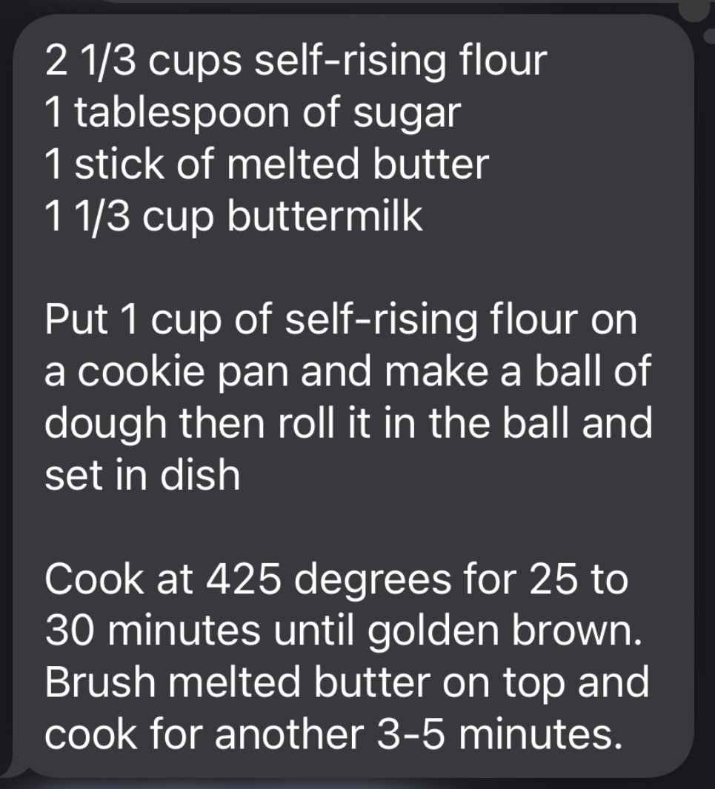

Biscuits
Back to Homepage
Ingredients
- Dough
- 2 1/3 cups, Self-rising flour
- 1 TBSP, Sugar
- 1/2 cups, Butter (melted)
- 1 1/3 cups, Buttermilk
- Additional Ingredients, Set Aside
- 1 cup, Self-rising flour, set aside
- 4 TBSP, Butter (melted)
Instructions
- Preheat oven to 425 degrees F
- Put 1 cup of self-rising flour on a cookie sheet
- Mix remaining ingredients in a bowl to make dough
- Portion the dough into 7 or 8 roughly equal parts, making each into a ball then rolling on the floured cookie sheet before setting in a baking dish
- Cook for 25-30 minutes until golden brown
- Brush melted butter on top and cook for an additional 3-5 minutes
- Enjoy!
